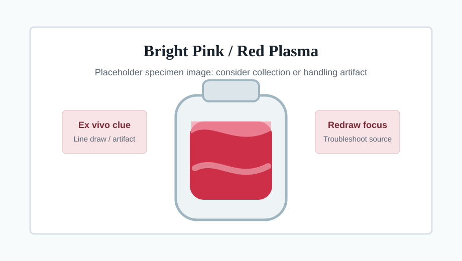
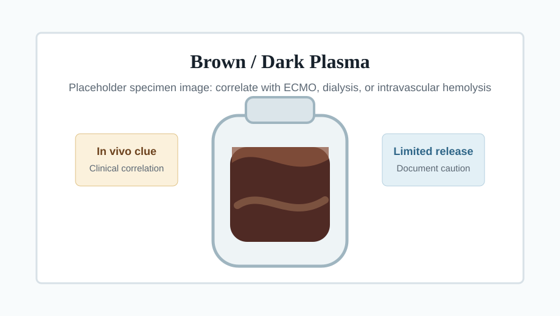

Classify hemolysis
Distinguish in vivo hemolysis from ex vivo collection or processing artifact using plasma color, hemolysis index, and patient history.
Pathology Resident On-Call Simulator
Practice the consultation workflow for severe hemolysis, with emphasis on in vivo versus ex vivo patterns, patient safety, clinical correlation, and clear communication.


Learning Objectives
Distinguish in vivo hemolysis from ex vivo collection or processing artifact using plasma color, hemolysis index, and patient history.
Recognize when severe hemolysis makes potassium, AST, ALT, LDH, bilirubin, magnesium, phosphorus, CK, and troponin unsafe to release.
Ask targeted questions of the technologist, review the chart when needed, and decide when to call the clinical team.
Document limitations, recommend redraw or limited release, and explain patient-safety concerns in professional language.
Hemolysis Basics
Suggested by collection or processing artifact, bright pink/red plasma, line draws, difficult venipuncture, and improvement after proper recollection.
Suggested by ECMO, dialysis, mechanical hemolysis, severe intravascular RBC destruction, dark or brown plasma, and clinical correlation across repeat specimens.
Laboratory Evaluation
Confirm the hemolysis level, trend across specimens, and whether the value is in the 3+ to 6+ caution range or 7+ severe range.
Ask which assays are flagged, rejected, outside validated interference limits, or generated but suppressed by middleware.
A numeric result is not automatically releasable. Determine whether local validation supports release, comment, or cancellation.
High-risk analytes include potassium, AST, ALT, LDH, total bilirubin, direct bilirubin, magnesium, phosphorus, CK, and troponin.
Gross ex vivo hemolysis can produce dangerous false results. A generated potassium or LDH may be analytically misleading even when the instrument returns a number.
Consultation Workflow
Ask the technologist: hemolysis index, plasma color, specimen type, collection source, repeated rejection history, affected tests, instrument flags, and whether values were generated.
Review the chart when hemolysis is 7+, repeatedly present, brown/dark, discordant with collection history, or when release may influence urgent management.
Call when severe in vivo hemolysis is likely, redraw is not feasible, the team requests high-risk analytes, or limited release is being considered.
Record whether hemolysis is likely ex vivo or in vivo, what was released or suppressed, what comment was used, and who was notified.
Decision Algorithm
Results may be released with cautionary comments when local policy permits and the affected analyte is within validated interference limits.
Bright red plasma, line draw, traumatic collection, or improvement after recollection strongly favors redraw and collection troubleshooting.
ECMO, dialysis, mechanical hemolysis, dark/brown plasma, and consistent repeat specimens may require limited release with explicit comments.
Interactive Clinical Cases
The chemistry analyzer flags 7+ hemolysis. Plasma is brown/dark. The patient is on ECMO with rising plasma free hemoglobin.
Three specimens from a central line are 7+ hemolyzed with bright red plasma. A peripheral redraw has not yet been attempted.
A grossly hemolyzed specimen has a generated potassium result. The team asks for release because the patient needs urgent management.
The CBC analyzer has severe hemolysis interference. Plasma free hemoglobin is greater than 500 mg/dL and several RBC indices are unreliable.
Communication Scripts
Can you confirm the hemolysis index, plasma color, specimen source, affected tests, whether values were generated or blocked, and whether prior specimens showed the same pattern?
This specimen is severely hemolyzed. Some results may be falsely affected, especially potassium and intracellular enzymes. Based on the specimen appearance and clinical context, we recommend redraw if feasible; if not feasible, we can discuss limited release with clear interpretive comments.
Specimen is severely hemolyzed, likely due to collection or handling artifact. Hemolysis-sensitive results may be unreliable. Recollection is recommended if clinically feasible.
Specimen is severely hemolyzed. Clinical context suggests hemolysis may reflect the patient's in vivo condition. Results are released with caution; hemolysis-sensitive analytes may be affected and should be interpreted with clinical correlation.
Severe hemolysis/plasma free hemoglobin interferes with CBC parameters. Limited results are reported per laboratory policy; hematocrit should be confirmed by spun hematocrit when indicated.
Final Quiz
Summary
Interpret hemolysis index and plasma color with patient history, collection source, repeat patterns, and instrument flags.
Bright pink/red plasma, line draws, and improvement after recollection support artifact. Encourage recollection and troubleshoot technique.
ECMO, dialysis, mechanical hemolysis, dark/brown plasma, and clinical correlation may justify limited release with explicit caution.
State which results are affected, why release is limited, what specimen is preferred, and who was notified.